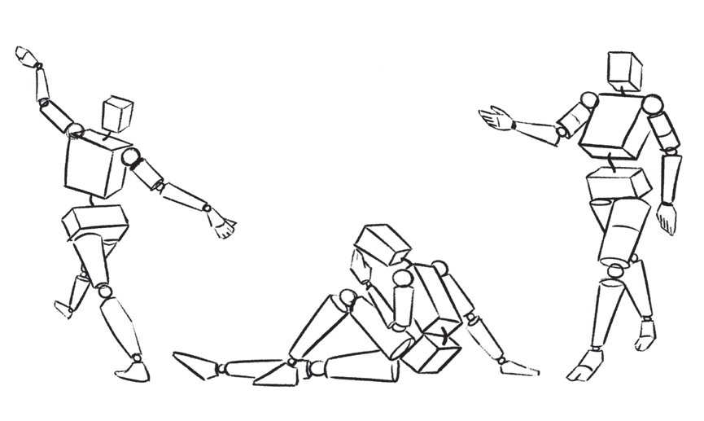

Tumia maumbo mbalimbali kuchora picha ya mtu mzima aliyesimama.
Uchoraji wa mikao mbalimbali ya binadamu
Binadamu wanaweza kuchorwa wakiwa katika mikao mbalimbali kama vile kuketi, kulala, kutembea na kuruka. Mkao wa viungo ndiyo huelezea mkao wa binadamu kama ameketi, amelala, anatembea, anakimbia au anaruka. Kwa mfano ukitaka kuchora mtu aliyelala, utahakikisha mikono, miguu, kifua na kichwa chake vimechorwa katika mwelekeo wa ulalo. Ukitaka kuchora mtu anayetembea au kukimbia utachora mikono, miguu, kifua na kichwa chake vikiwa katika muonekano wa mwelekeo, yaani kati ya ulalo na wima. Kielelezo namba 11 kinaonesha maumbo yaliyotumika kuchora mikao mbalimbali ya binadamu.

Kielelezo namba 11: Matumizi ya maumbo katika kuchora mikao mbalimbali ya binadamu
Uchoraji wa wanyama
Michoro mingi ya wanyama huongozwa na ramani ya umbo la duara na umbo la mche duara. Kinachotofautiana ni vipimo kati ya aina moja ya mnyama na nyingine. Wanyama wadogo kama vile mbwa wanatumia vipimo vidogo vya